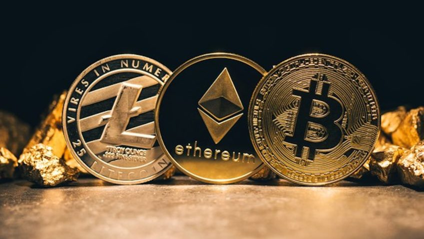
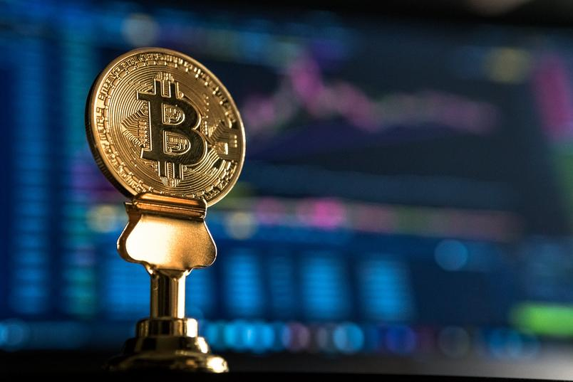

O que são criptomoeadas?
vem comigo que eu te explico...

As criptomoedas são moedas digitais descentralizadas, ou seja, que não são controladas por algum órgão ou país em específico. Elas são criadas em uma rede blockchain que é responsável por armazenar com segurança os mais diversos tipos de informações. Como, por exemplo, transações financeiras, registros e os dados de pessoas que participam dessas transações.
Essas criptomoedas geradas no blockchain possuem um valor que, em alguns casos, pode ser convertido para outras moedas, como o dólar ou real, e, por isso, elas podem ser utilizadas como moeda de troca para compra de produtos e consumo de serviços.

Mas isso é possível? Para explicar que sim, Fernando Ulrich, autor do livro Bitcoin: A moeda na era digital, faz uma analogia bem simples: “O que o e-mail fez com a informação, o Bitcoin fará com o dinheiro”. Antes da internet, as pessoas dependiam dos correios para enviar uma mensagem a quem estivesse em outro lugar. Era preciso um intermediário para entregá-la fisicamente – inimaginável para quem tem acesso a e-mail e outros serviços de mensageria.
Algo semelhante acontecerá com as moedas virtuais no futuro. “Com o Bitcoin você pode transferir fundos de A para B em qualquer parte do mundo sem jamais precisar confiar em um terceiro para essa simples tarefa”, explica Ulrich no livro.
Para saber uma explicação mais aprofundada clique em "Leia mais"!
Quais são as principais criptos?
Bitcoin

Bitcoin (BTC) é a mais conhecida das moedas digitais. Trata-se do primeiro sistema de pagamentos global totalmente descentralizado. Foi desenhado em 2008, em meio à crise financeira global iniciada no mercado americano de hipotecas, com o objetivo de substituir o dinheiro de papel, além de eliminar a necessidade da presença de bancos para intermediar operações financeiras.
Segundo o site Bitcoin.org, a primeira especificação do Bitcoin e prova de conceito foram publicados em um artigo assinado por Satoshi Nakamoto, pseudônimo de um programador (ou grupo de programadores) até hoje não identificado. Ele inventou a lógica de funcionamento do blockchain, sistema que possibilitou a existência do Bitcoin.
No artigo, Nakamoto estabeleceu que haverá no máximo 21 milhões de bitcoins em circulação. Estima-se que a última moeda será minerada no ano de 2140.
Para saber mais sobre essa cripto clique em "Leia mais"!
Ethereum

Existem algumas semelhanças, mas também diferenças, entre o Bitcoin e o Ethereum (ETH). A moeda digital original, na verdade, se chamava Ether. Em 2016, no entanto, um hacker encontrou uma falha no sistema e, a partir dela, conseguiu roubar o equivalente a US$ 50 milhões em Ether. Diante de dúvidas sobre o que seria do futuro da moeda, a comunidade que a mantinha optou por criar uma nova rede.
O Ether original – alvo do roubo – passou a ser chamado de Ethereum Classic e a moeda que começou a circular na nova rede ganhou o nome de Ethereum. Com o apoio da comunidade, ela vale mais que a sua primeira versão.
Originalmente, o Ether não foi criado para ser uma moeda digital como o Bitcoin. A ideia era que se tornasse um ativo para recompensar os desenvolvedores pelo uso da plataforma Ethereum em seus projetos. Trata-se de uma plataforma descentralizada utilizada para executar “contratos inteligentes”, que são operações realizadas automaticamente quando certas condições são cumpridas.
O blockchain também é a base para a validação das transações com Ethereum, para garantir a segurança e ainda evitar fraudes. Assim como no caso do Bitcoin, a criação de novas moedas também se baseia no processo de mineração. Hoje, o Ethereum está entre as criptomoedas mais negociadas do mundo.
Para saber mais sobre essa cripto clique em "Leia mais"!
Tether

Ao contrário do Bitcoin e outras moedas digitais, o Tether (USDT), lançado em 2014 por uma empresa de mesmo nome, é uma stablecoin, porque tem lastro em uma moeda física. A proposta dessa criptomoeda é de manter uma paridade com o dólar americano. Ou seja, para cada Tether emitido é preciso haver um dólar equivalente em caixa.
Desde que a criptomoeda foi criada, no entanto, especialistas questionam a paridade, já que a empresa não oferecia transparência sobre como fazia para segui-la. Em 2019, foi anunciado que nem todo Tether está realmente lastreado em um dólar. Segundo a empresa, 100% deles são garantidos, mas não apenas por moeda tradicional, como também por equivalentes de caixa e outros ativos ou recebíveis de empréstimos feitos pela Tether a terceiros.
A característica do Tether é ser uma moeda estável que representa moedas físicas no mundo digital. Devido à menor volatilidade, ele se tornou uma boa opção para realizar transferências entre sistemas e com diferentes criptomoedas. Assim, investidores se protegem das variações de preço de outros ativos e evitam o risco de ter perdas significativas durante essas operações.
Para saber mais sobre essa cripto clique em "Leia mais"!